Instalações Elétricas - Ademaro A. M. B. Cotrim Capítulo 11 - Proteção contra Sobrecorrentes
Prof. Dr. Thales A. C. Maia
UFMG - DEE
Introdução às Sobrecorrentes
Conceitos Básicos
Nas instalações elétricas, as sobrecorrentes são tradicionalmente divididas em dois tipos fundamentais:
Correntes de Sobrecarga: Ocorrem em um circuito sem que haja qualquer falta elétrica.
Correntes de Curto-Circuito: Provenientes de uma falta elétrica (curto).
As partidas de muitos equipamentos dão lugar a sobrecargas transitórias:
Lâmpadas incandescentes: ~12x a corrente nominal.
Motores de indução: ~7x a corrente nominal (por poucos segundos).
Lâmpadas de descarga (alta pressão): 2x a 3x a corrente nominal (por alguns minutos).
Causas Comuns
A longo prazo, as sobrecorrentes assumem caráter permanente ou de falta, sendo as principais causas:
Sobrecargas: Provocadas pela substituição de equipamentos de utilização previstos por outros de maior potência.
Sobrecargas: Provocadas por motores mecanicamente sobrecarregados.
Curtos-Circuitos: Provocados por erros de ligação ou falha severa na isolação.
Limitação da Duração
Qualquer sobrecarga eleva perigosamente a temperatura do cabo (10 ºC a 15 °C acima do limite). Mas o fio tem inércia térmica: ele não derrete instantaneamente.
Uma sobrecarga pequena demora dezenas de minutos para causar danos.
Uma sobrecarga severa (ex: rotor de motor travado) danifica o isolante em poucos segundos.
Por isso, o disjuntor não pode ter um “temporizador” fixo. A sua resposta deve se adaptar à gravidade do problema.
O que é Atuação a Tempo Inverso?
Para espelhar o comportamento físico do cabo, a proteção térmica (do disjuntor ou relé) possui uma curva de Tempo Inverso.
O conceito é uma regra de três intuitiva: > MUITO calor gerado (Corrente Alta) \(\longrightarrow\) POUCO tempo tolerado para o desarme.
A curva do disjuntor “imita” a curva de aquecimento do cabo, protegendo-o sem desligar a fábrica à toa por causa de um pico de partida rápido.
Atuação a Tempo Inverso
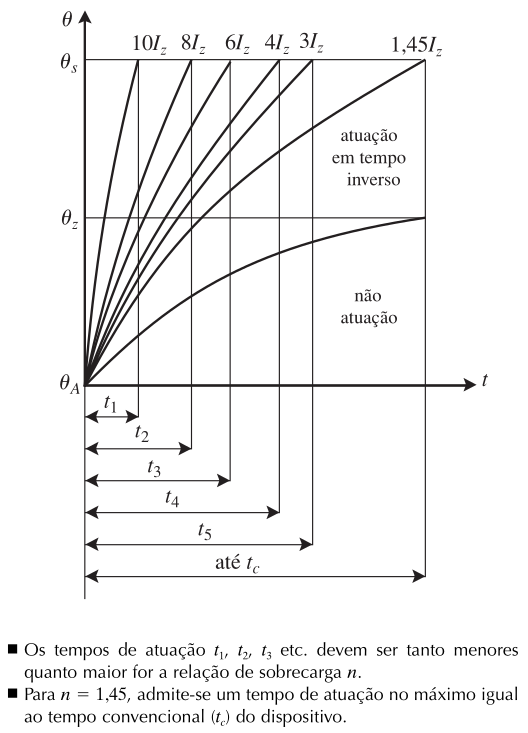
Fig. 1: Atuação a tempo inverso.
Zona de Atuação Ideal
As curvas de sobrecarga do cabo (partida a frio e a quente) delimitam a zona ideal para a curva de atuação do dispositivo de proteção:
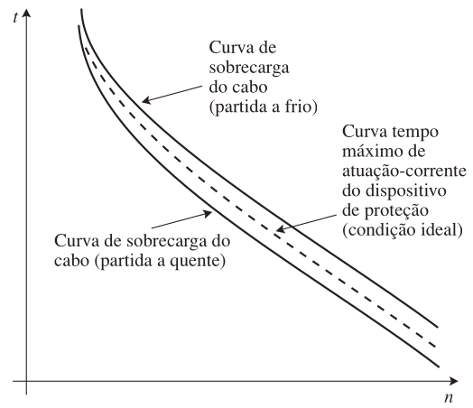
Fig. 2: Curvas-limite de sobrecarga e curva de atuação ideal.
Impactos Térmicos
Sobrecorrentes prolongadas afetam perigosamente o isolamento dos condutores, elevando a temperatura de 10 ºC a 15 °C acima do limite de serviço contínuo.
Um condutor PVC operando continuamente a \(70^\circ\text{C}\) possui vida útil estimada de cerca de 20 anos.
A Integral de Joule
Conceituação
A integral de Joule (\(I^2t\)) mede o “esforço térmico” total de um pulso de corrente de curta duração — como um curto-circuito.
Para correntes muito elevadas e tempos muito curtos, não se pode mais tratar a corrente como um valor eficaz constante: é preciso considerar corrente e tempo em conjunto, no produto integral:
\[\int_0^t i(t)^2\, dt = I^2t \tag{11.1}\]
Segundo o Buff Book do IEEE: o conceito de \(I^2t\) substitui a corrente simétrica porque representa os esforços térmicos e magnéticos reais impostos a um componente nos primeiros ciclos de um curto-circuito.
Interpretação Gráfica
\(I^2t\) é proporcional à área sob a curva \(i^2 = f(t)\):
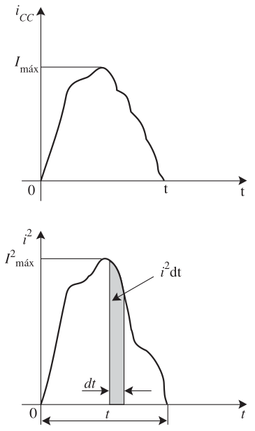
Fig. 3: Interpretação da integral de Joule.
Proteção Parcial do Condutor
Duas situações comuns em que o dispositivo só protege parcialmente a faixa de sobrecarga:
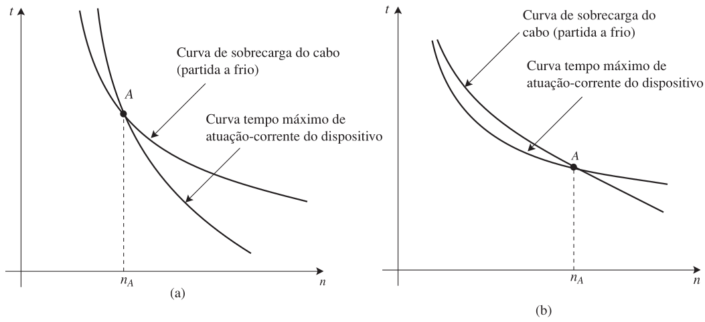
Fig. 4: Proteção de condutor contra correntes de sobrecarga: (a) dispositivo só protege a partir de nA; (b) dispositivo só protege até nA
Integral de Joule dos Condutores
Nos condutores, a integral de Joule está diretamente ligada à vida útil da isolação.
A 70 °C contínuos, um cabo com isolação de PVC tem vida útil estimada de ~20 anos.
Cada ocorrência de sobrecorrente “consome” uma fração dessa vida útil — adota-se, por segurança, que cada sobrecorrente pode durar até 1/1.000 da vida útil total do cabo.
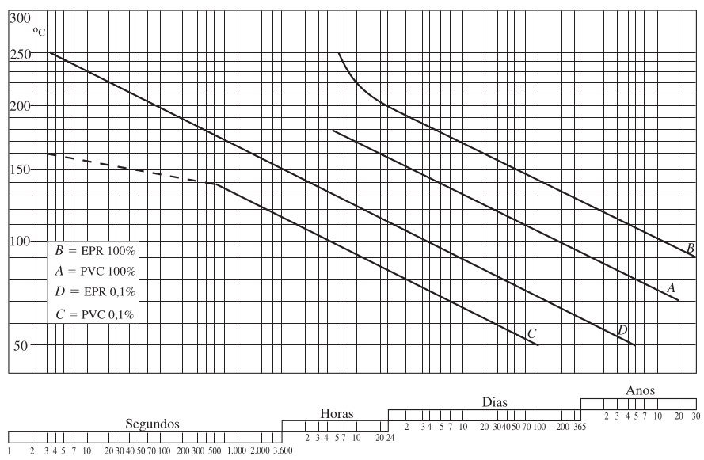
Fig. 5: Curvas de vida útil relativas às isolações de PVC e EPR.
A Curva \((I^2t) = f(I)\) do Condutor
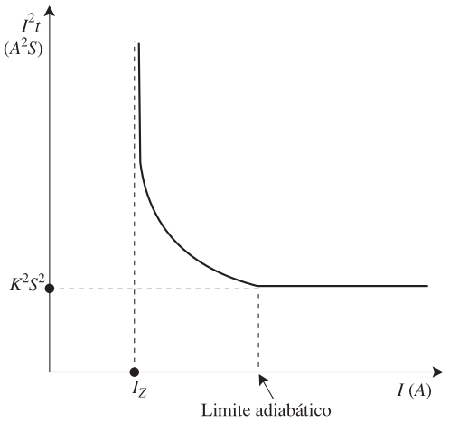
Fig. 6: Curva \(I^2t = f(I)\) típica de um cabo
Assíntota vertical em \(I = I_Z\): o condutor atinge a temperatura máxima de serviço contínuo; \(I^2t \to \infty\).
Assíntota horizontal (limite adiabático): sem troca de calor com o meio, \(I^2t \approx\) constante.
Cálculo do \(K\) (NBR 5410)
A integral de Joule admissível por um condutor, em regime adiabático, entre a temperatura de serviço contínuo \(\theta_Z\) e a de curto-circuito \(\theta_k\):
\[\int_0^t i^2\, dt = K^2S^2 \tag{11.7}\]
onde \(S\) é a seção do condutor (mm²) e \(K\) depende do material condutor e da isolação:
Isolação
Metal
\(\theta_k\) (°C)
\(K\)
PVC
Cobre
160
115
EPR/XLPE
Cobre
250
135
PVC
Alumínio
160
74
EPR/XLPE
Alumínio
250
87
(Tabela 11.1 ■ Obtenção dos valores de K — 2 de 4 linhas, a título de ilustração)
Exemplo: Condutor Cu/PVC de 10 mm²
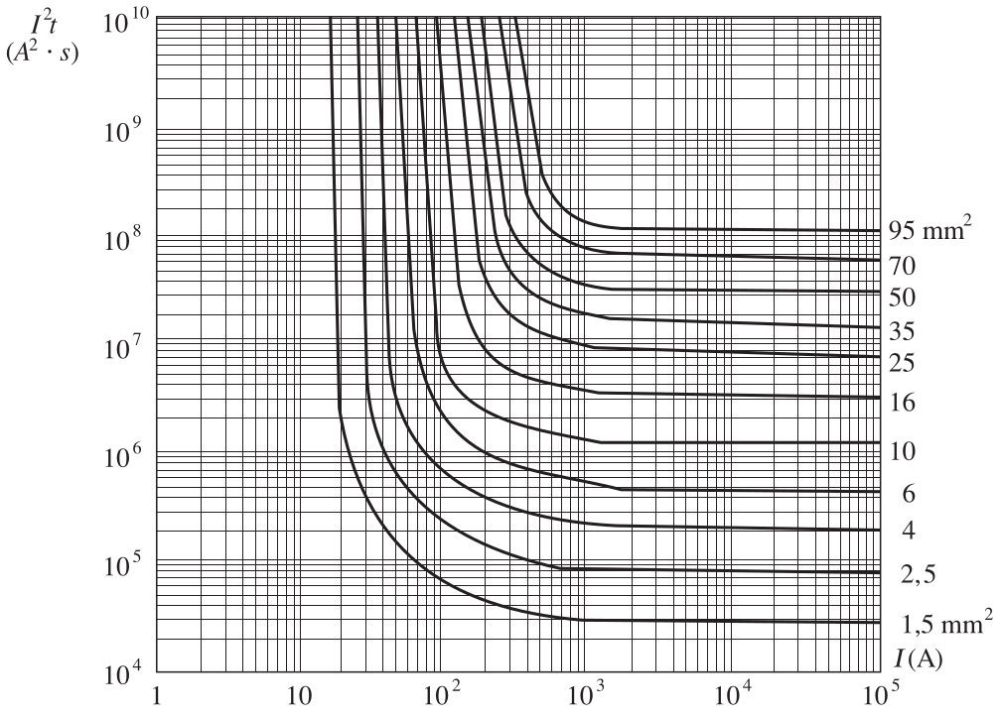
Fig. 7: Curvas \(I^2t = f(I)\) para condutores e cabos isolados de cobre, com isolação de PVC, considerando a maneira de instalar B e dois condutores carregados (Cortesia da Bticino)
Um condutor Cu/PVC de 10 mm² conduzindo 200 A possui uma energia de aproximadamente \(4\times10^6\ A^2s\).
Já próximo ao seu limite adiabático (≈1.030 A), a energia máxima admissível cai para \(1.322{,}5\times10^3\ A^2s\).
Exemplo: Condutor Cu/PVC de 10 mm²
Vamos calcular, em Julia, por quanto tempo o condutor suporta cada uma dessas correntes — e visualizar a curva \((I^2t)=f(I)\) completa.
Código
usingPlots# Dados do condutor Cu/PVC 10 mm² (Figura 11.7a)I2t_200A =4e6# A²s, a 200 A (bem abaixo do limite adiabático)I2t_adiab =1322.5e3# A²s, no limite adiabático (~1030 A)I_adiab =1030.0# At_200 = I2t_200A /200.0^2t_2000 = I2t_adiab /2000.0^2println("Corrente de 200 A -> tempo máximo: ", round(t_200, digits=1), " s")println("Corrente de 2000 A -> tempo máximo: ", round(t_2000, digits=2), " s")
Corrente de 200 A -> tempo máximo: 100.0 s
Corrente de 2000 A -> tempo máximo: 0.33 s
Integral de Joule dos Disjuntores Termomagnéticos
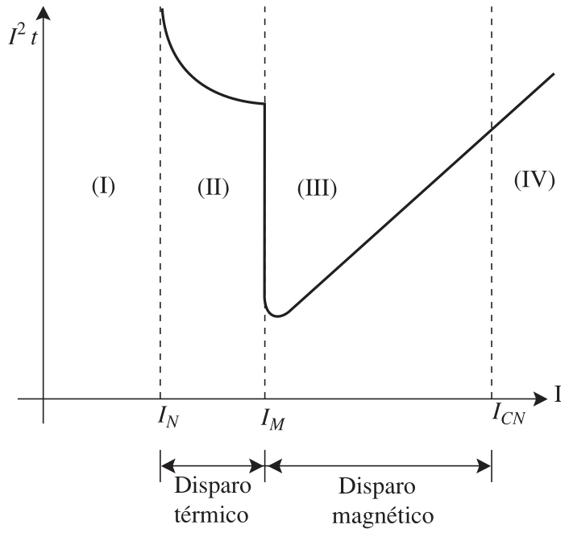
Fig. 8: Característica \(I^2t = f(t)\) típica de um dis- juntor termomagnético
A curva \((I^2t)=f(I)\) de um disjuntor apresenta quatro regiões:
(I)\(I \le I_N\): sem limitação de tempo.
(II)\(I_N < I \le I_M\): atua o disparador térmico (tempos longos).
(III)\(I_M < I \le I_{CN}\): atua o disparador eletromagnético — \(I^2t\) cresce com a corrente.
(IV)\(I > I_{CN}\): o disjuntor não deve ser utilizado.
Para os disjuntores rápidos, na região (III), \(I^2t\) é aproximadamente proporcional a \(I^2\) — a curva aparece como uma reta em escala log-log.
Ação de um Disjuntor Limitador de Corrente
O oscilograma mostra a corrente de curto-circuito sendo interrompida antes de atingir seu pico presumido — a área sob a curva até a interrupção é proporcional à integral de Joule que o disjuntor efetivamente deixa passar.
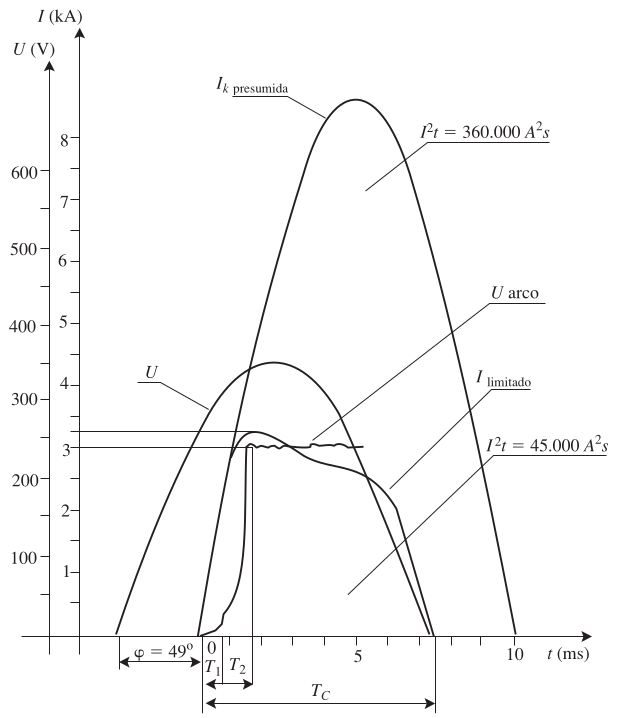
Fig. 9: Ação de um disjuntor limitador de corrente.
Curvas de Curto-Circuito dos Cabos
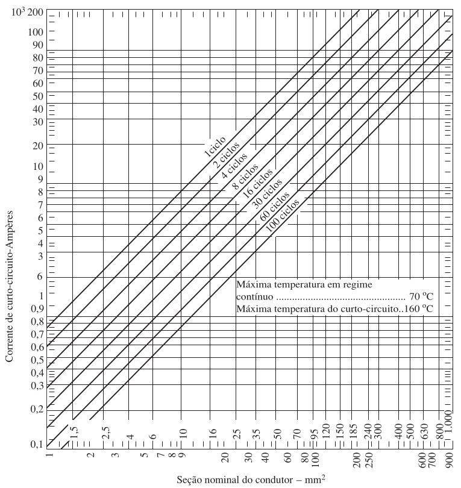
Fig. 10: Curvas de corrente de curto-circuito em função das seções, com o tempo em ciclos) como parâmetro para os cabos Sintenax 0,6/1 kV da Prysmian.
Integral de Joule dos Fusíveis
Ao contrário dos disjuntores (reutilizáveis), dos fusíveis exige-se apenas que não ofereçam perigo na interrupção.
O tempo de pré-arco é, com boa aproximação, inversamente proporcional a \(I^2\) — grande poder de limitação sobre a corrente de crista.
Há três valores relevantes de \(I^2t\): de fusão, de arco, e de interrupção (fusão + arco) — este último é o que interessa à proteção dos condutores.
Critérios Gerais da Proteção contra Sobrecorrentes
O Dispositivo de Proteção Ideal
Os condutores vivos de um circuito devem ser protegidos contra sobrecorrentes. Um dispositivo ideal:
Não intervém para correntes \(\le I_Z\) (capacidade de condução do condutor).
Intervém sempre, ainda que em tempo longo, para sobrecargas até \(1{,}45\,I_Z\).
Intervém em tempos decrescentes entre \(1{,}45\) e \(6\)–\(7\,I_Z\).
Intervém em tempos brevíssimos para correntes de curto-circuito.
Característica de Atuação Ideal × Real
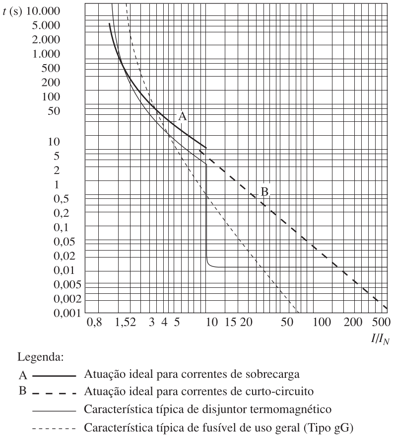
Fig. 11: Característica de atuação ideal comparada com disjuntores e fusíveis
Disjuntores termomagnéticos aproximam-se do ideal para sobrecargas e curtos moderados; fusíveis comportam-se melhor em curtos elevados, pior em sobrecargas leves.
Regras de Ouro (NBR 5410)
A NBR 5410 estabelece duas regras de ouro para coordenar o dispositivo (disjuntor/fusível) e o condutor:
Condição 1:\[ I_B \le I_N \le I_Z \]
Condição 2 (Proteção contra superaquecimento):\[ I_2 \le 1{,}45\, I_Z \]
onde \(I_2\) é a corrente convencional de atuação (disjuntores) ou de fusão (fusíveis), \(I_2 = \alpha\, I_N\).
Curvas Comerciais de Fusíveis
Fabricantes fornecem, para cada corrente nominal, os valores de \(I^2t\) de fusão, arco e interrupção — a característica que interessa à proteção dos condutores é a de interrupção:
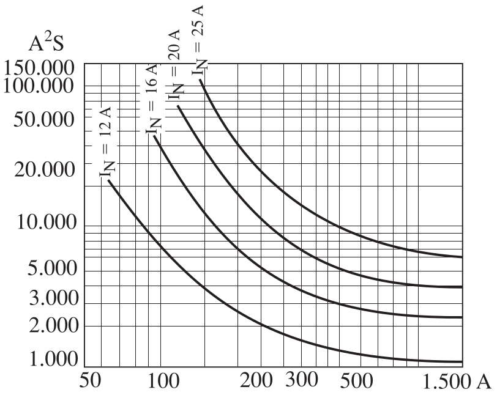
Fig. 12: Características I 2t de interrupção para alguns fusíveis tipo gG (Cortesia da Bticino)G
Tipos de Gráficos \(I^2t\) dos Fabricantes
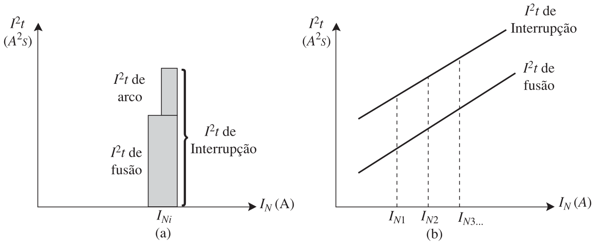
Fig. 13: Tipos de gráficos \(I^2t\) apresentados pelos fabricantes de fusíveis.
Usados principalmente para a verificação da seletividade entre fusíveis (adiante).
Tipos de Gráficos \(I^2t\) dos Fabricantes
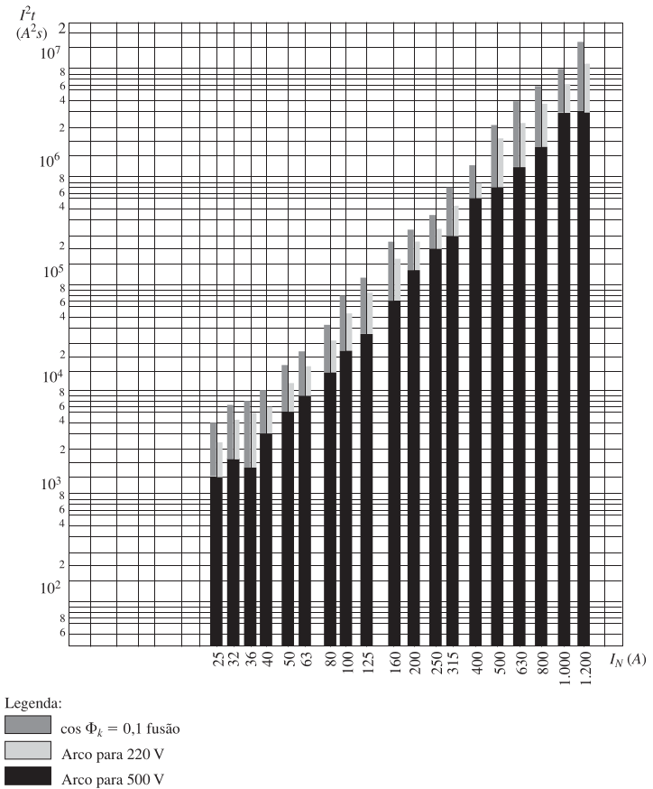
Fig. 14: Valores de I²t para fusíveis gG (Legrand)
Exemplo: Verificação de Disjuntor
Considere um circuito com \(I_B = 28 \text{ A}\), condutores PVC e disjuntor com \(I_N = 30 \text{ A}\). O disjuntor protegerá termicamente o circuito sem desarmes falsos?
Código
I_B =28.0# Corrente de projetoI_N =30.0# Corrente do Disjuntor# Cabo 6 mm² (suporta 32.8 A em dada condição)I_Z =32.8# Para disjuntores DIN, a corrente convencional de atuação I_2 é 1.45 * I_NI_2 =1.45* I_Ncond_1 = (I_B <= I_N) && (I_N <= I_Z)cond_2 = I_2 <= (1.45* I_Z)println("Condição 1 ($I_B <= I_N <= I_Z): ", cond_1 ? "OK (28 <= 30 <= 32.8)":"FALHOU")println("Condição 2 ($I_2 <= 1.45 I_Z): ", cond_2 ? "OK ($(I_2) <= $(1.45*I_Z))":"FALHOU")
\(\Delta\theta_R\): sobretemperatura de regime — onde a curva se estabiliza: \(\Delta\theta_R=n^2\Delta\theta_Z\), com \(n=I/I_Z\). O quadrado vem do aquecimento Joule (\(P=I^2R\)): dobrar a corrente quadruplica o calor gerado, não dobra.
\(\Delta\theta_0\): sobretemperatura inicial — partida a frio (\(\theta_0=\theta_A\)): \(\Delta\theta_0=0\); partida a quente (\(\theta_0=\theta_Z\)): \(\Delta\theta_0=\theta_Z-\theta_A\).
\(\Delta\theta_{alvo}\): sobretemperatura que queremos atingir — \(\theta_S\) (sobrecarga) ou \(\theta_R\) (o próprio regime).
Para o PVC (\(\theta_A=30^\circ\text{C}\), \(\theta_Z=70^\circ\text{C}\)): partida a frio\(\Delta\theta_0=0\); partida a quente\(\Delta\theta_0=40^\circ\text{C}\).
“Chegar ao regime” levaria tempo infinito (\(e^{-t/k_T}\to0\) só quando \(t\to\infty\)) — por isso \(t_{R1}\)/\(t_{R2}\) usam a convenção prática de 99% do valor final.
Vamos aplicar isso a dois condutores Cu/PVC reais do livro — 1,5 mm² e 10 mm² — no mesmo tipo de instalação.
Código
# Constante de tempo térmica -- Expressão 9.46kT(S, a) = (1e4/ a^2) * (0.7*S^0.75+0.8*S^0.5+0.36*S^0.25)# Eletroduto embutido em alvenaria, 2 condutores carregados (letra B1)a =13.5# Tabela 9.3secoes =Dict("1.5 mm²"=> (S=1.5, Iz=17.5), "10 mm²"=> (S=10.0, Iz=57.0))for (nome, d) in secoes k =kT(d.S, a) tS1, tS2 =1.79*k, 1.15*k tR1, tR2 =4.6*k, 3.95*kprintln("== Condutor $nome (Iz=$(d.Iz) A) ==")println(" k_T = $(round(k, digits=1)) s")print(" t_S1 (frio→sobrecarga) = $(round(tS1, digits=1)) s ")println(" t_S2 (quente→sobrecarga)= $(round(tS2, digits=1)) s")print(" t_R1 (frio→regime) = $(round(tR1, digits=1)) s ")println(" t_R2 (quente→regime) = $(round(tR2, digits=1)) s")end
== Condutor 1.5 mm² (Iz=17.5 A) ==
k_T = 127.7 s
t_S1 (frio→sobrecarga) = 228.5 s t_S2 (quente→sobrecarga)= 146.8 s
t_R1 (frio→regime) = 587.3 s t_R2 (quente→regime) = 504.3 s
== Condutor 10 mm² (Iz=57.0 A) ==
k_T = 389.9 s
t_S1 (frio→sobrecarga) = 698.0 s t_S2 (quente→sobrecarga)= 448.4 s
t_R1 (frio→regime) = 1793.7 s t_R2 (quente→regime) = 1540.2 s
Interpretação
O tempo convencional de 1 hora (3.600 s) para \(I=1{,}45\,I_N\) é o prazo máximo que a norma dá para o dispositivo atuar — não uma garantia de que ele atua exatamente nesse instante.
Para o condutor de 1,5 mm², \(t_{R1}\approx 598\,s\): o cabo atinge o regime (\(\theta_R=114^\circ\text{C}\)) em menos de 10 minutos.
O cabo está acima do próprio limite que a norma considera aceitável.
O cabo pode passar até ~3.000 s a mais (o resto da hora) nessa condição de sobretemperatura antes do desarme garantido.
Interpretação
Para o condutor de 10 mm², o mesmo raciocínio dá \(t_{R1}\approx 1.812\,s\) — ainda crítico, mas com mais margem (seção maior \(\Rightarrow\)\(k_T\) maior \(\Rightarrow\) esquenta mais devagar).
Por isso a NBR 5410 não confia só no critério de \(1{,}45\,I_Z\)/1h: para disjuntores, exige sempre também \(I_N \le I_Z\) (Expressão 11.12) — essa condição sozinha já é mais restritiva, evitando esse cenário desde o início.
O \(\alpha\) (multiplicador de \(I_N\) que define \(I_2\)) muda conforme a norma do disjuntor (Tabela 6.3):
\(\alpha\)
Norma
\(1{,}30\)
NBR IEC 60947-2 (industrial)
\(1{,}35\)
RTQ / Inmetro 243 (residencial, compulsória)
\(1{,}45\)
NBR NM 60898 (residencial/similar)
Curva-Limite de Sobrecarga
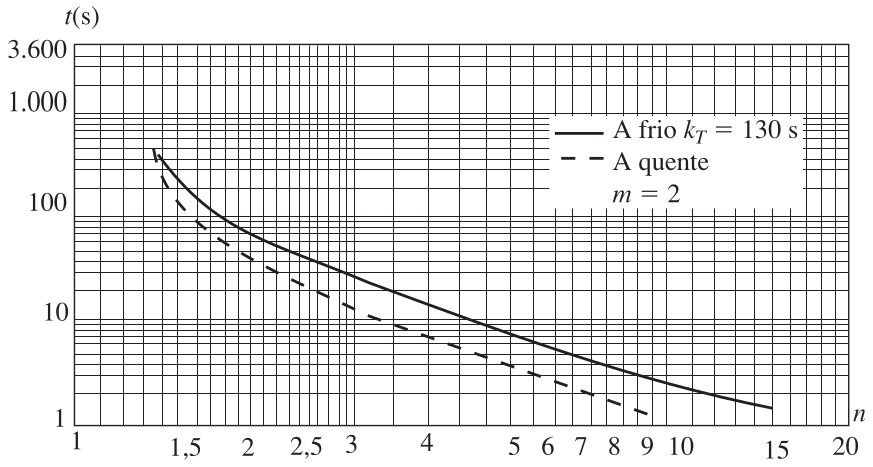
\(k_T = 130\) s (cabo pequeno)
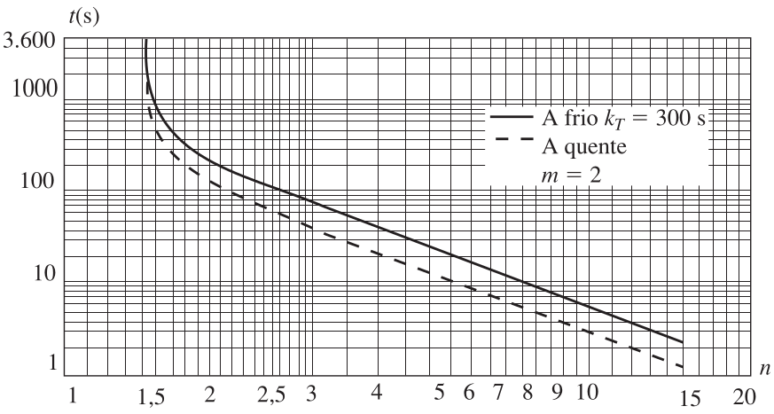
\(k_T = 300\) s (cabo médio)
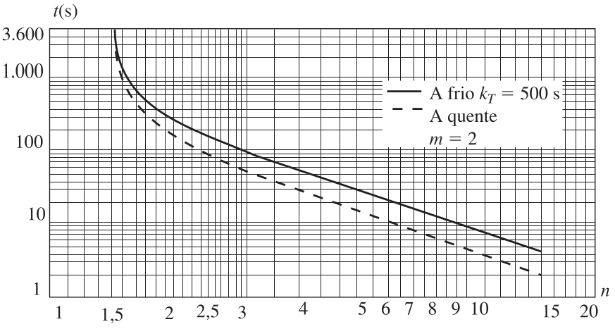
\(k_T = 500\) s (cabo grande)
Fig. 15: Curva-limite de sobrecarga nas condições da NBR 5410 para m=2 e kT=130, 300 e 500 segundos.
Exemplo: Dimensionamento Completo
Circuito com condutores Cu/PVC, eletroduto embutido em alvenaria, dois condutores carregados, corrente de projeto \(I_B = 28\ A\), temperatura ambiente \(30^\circ\text{C}\), compartilhando o eletroduto com outro circuito.
(a) Capacidade de condução: fator de agrupamento \(f_3=0{,}8\) (Tabela 9.10) \(\Rightarrow\) corrente fictícia \(I_B' = I_B/f_3\).
Código
I_B =28.0f3 =0.8I_B_ficticia = I_B / f3println("Corrente fictícia de projeto: I_B' = $(round(I_B_ficticia, digits=1)) A")# Tabela 5.27 (letra B1) + Tabela 9.4 -> seção de 6 mm² com capacidade tabelada de 41 AIz_tabelado_6mm =41.0Iz_6mm = Iz_tabelado_6mm * f3println("Seção escolhida: 6 mm² -> Iz = $(Iz_tabelado_6mm) × $(f3) = $(Iz_6mm) A")
Corrente fictícia de projeto: I_B' = 35.0 A
Seção escolhida: 6 mm² -> Iz = 41.0 × 0.8 = 32.800000000000004 A
(b) Proteção com Disjuntor Termomagnético
Disjuntor em caixa moldada, corrente nominal referida a 40 °C (30 °C ambiente + 10 °C do quadro).
Menor disjuntor comercial com I_N >= I_B=28A: I_N = 30 A
Condição 11.12 (I_N <= I_Z=32.8A): OK
(c) Proteção com Fusível gG — Falha e Correção
Um fusível gG de \(I_N=35\,A\) (menor comercial \(\ge 28\,A\)) tem \(\alpha=1{,}6\) (Tabela 6.2). Testamos a Expressão 11.14 (\(\alpha I_N \le 1{,}45\,I_Z\)) no cabo de 6 mm² e, se necessário, no de 10 mm².
Código
I_N_fus =35.0alpha =1.6Iz_6mm, Iz_10mm =32.8, 45.6# 41*0.8 e 57*0.8teste(Iz) = alpha * I_N_fus <=1.45* Izprintln("Cabo 6 mm² (Iz=$(Iz_6mm)A): $(alpha)×$(I_N_fus)=$(alpha*I_N_fus) <= 1.45×$(Iz_6mm)=$(round(1.45*Iz_6mm,digits=1)) ? ", teste(Iz_6mm) ? "OK":"FALHA")println("Cabo 10 mm² (Iz=$(Iz_10mm)A): $(alpha)×$(I_N_fus)=$(alpha*I_N_fus) <= 1.45×$(Iz_10mm)=$(round(1.45*Iz_10mm,digits=1)) ? ", teste(Iz_10mm) ? "OK":"FALHA")println()println(teste(Iz_6mm) ? "":"-> O cabo de 6 mm² não atende com fusível; é necessário usar 10 mm².")
Cabo 6 mm² (Iz=32.8A): 1.6×35.0=56.0 <= 1.45×32.8=47.6 ? FALHA
Cabo 10 mm² (Iz=45.6A): 1.6×35.0=56.0 <= 1.45×45.6=66.1 ? OK
-> O cabo de 6 mm² não atende com fusível; é necessário usar 10 mm².
Omissão da Proteção contra Sobrecargas
A NBR 5410 permite omitir a proteção contra sobrecarga (fora de áreas de risco BE2/BE3), entre outros, quando:
(a) A linha a jusante de uma troca de seção já está protegida por um dispositivo a montante.
(b) A linha não é suscetível a sobrecargas (ex: motor com proteção térmica individual) e está protegida contra curto-circuito.
(c) Circuitos de telecomunicação, comando e sinalização.
Omissão da Proteção contra Sobrecargas
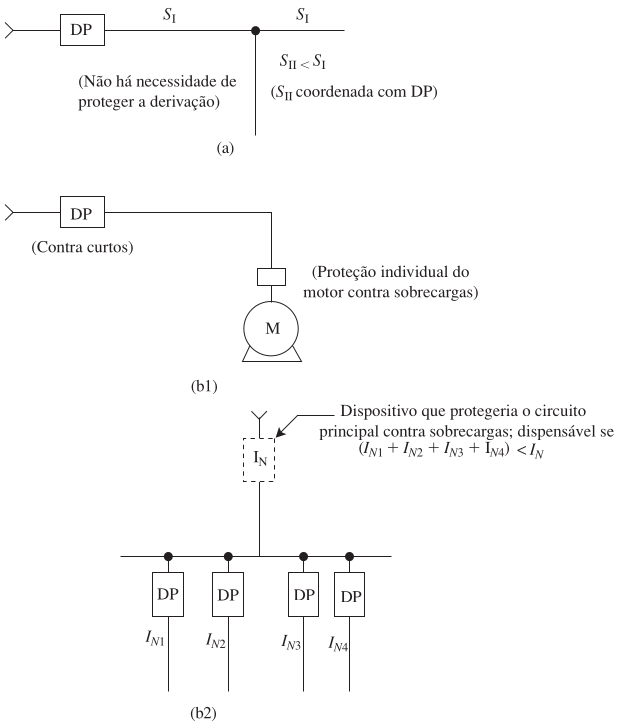
Fig. 16: Exemplos de omissão da proteção contra sobrecargas.
Exemplo: Omissão via RTQ Inmetro
Derivação com \(I_Z=42\,A\) já protegida pelo disjuntor geral \(I_N=40\,A\) — como \(40 < 42\,A\) (Expressão 11.12), a proteção pode ser omitida na derivação.
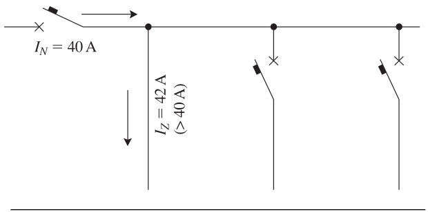
Fig. 17: Diagrama de omissão.
Exemplo: Circuito Principal com Derivações
Os trechos AB, BC e CD (seções decrescentes) já estão protegidos pelos disjuntores das derivações B, C e D.
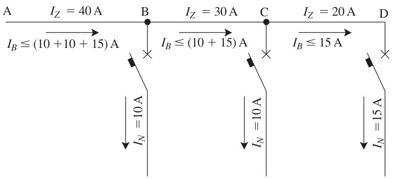
Fig. 18: Diagrama de omissão.
Proteção contra Curtos-Circuitos
Condições Gerais (NBR 5410)
(a) Capacidade de interrupção:\[ I_{CN} \ge I_k \tag{11.23} \]
(b) Integral de Joule que o dispositivo deixa passar:\[ \int_0^t i^2\,dt \le K^2S^2 \tag{11.24} \]
Para curtos de 0,1 a 5 s, com corrente aproximadamente constante: \[ I_k^2 \cdot t \le K^2S^2 \tag{11.25} \]
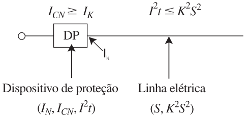
Fig. 19: Condições de proteção contra curto-circuito
Capacidade de Interrupção Inferior ao Curto Presumido
A norma admite, excepcionalmente, um dispositivo com \(I_{CN} < I_k\) no ponto, desde que:
Exista outro dispositivo a montante com capacidade suficiente.
A energia que o dispositivo a montante deixa passar não supere a suportável pelo dispositivo e pela linha a jusante.
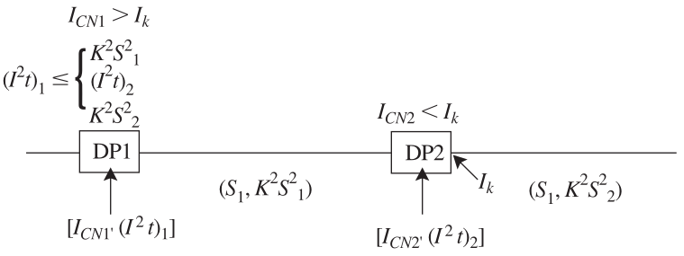
Fig. 20: Dispositivo com capacidade inferior à corrente de curto presumida
Limite Superior da Corrente Presumida
A corrente correspondente à interseção das curvas \((I^2t)=f(I)\) do disjuntor e do condutor deve ser, no mínimo, igual à corrente de curto-circuito presumida simétrica no ponto de instalação.
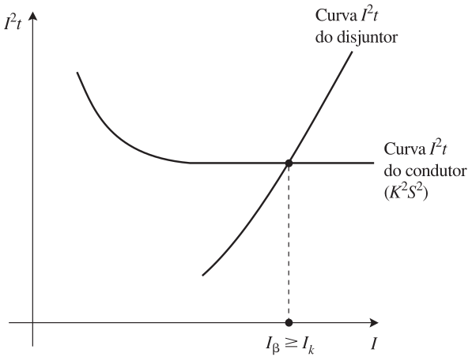
Fig. 21: Limite superior da corrente de curto-circuito presumida simétrica.
Proteção dos Condutores de Fase
Regra geral da NBR 5410: a detecção de sobrecorrentes deve ser prevista em todos os condutores de fase, provocando o seccionamento do condutor em que a sobrecorrente for detectada — não necessariamente dos demais.
Exceção 1: motores trifásicos — o seccionamento de uma única fase pode ser perigoso; todas as fases devem ser seccionadas simultaneamente.
Exceção 2: instalações residenciais — o dispositivo deve ser multipolar (disjuntores unipolares “emendados” lado a lado não são aceitos pela norma).
Coordenação Seletiva
O que é Seletividade?
Quando dois ou mais dispositivos são instalados em série, a atuação deles deve ser coordenada para que, em caso de falta, só atue o dispositivo mais a jusante (próximo do defeito).
Isso evita apagar a fábrica inteira por causa do defeito numa máquina!
Seletividade entre Fusíveis
Dois fusíveis gG são totalmente seletivos se a corrente do montante for pelo menos 1,6 vez maior que a do fusível a jusante:
\[ I_{NA} \ge 1{,}6\, I_{NB} \tag{11.26} \]
Ex: Um fusível gG de 63 A só será seletivo com outro de, no mínimo, \(63 \times 1{,}6 = 100{,}8\) (portanto, usa-se 100 A a montante).
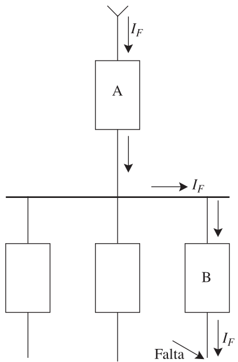
Fig. 22: Dois dispositivos de proteção A e B, em série, percorridos pela mesma corrente de falta
Condição de Seletividade Total (Fusíveis)
É preciso garantir que o fusível a montante ainda não tenha iniciado a fusão quando o de jusante interrompe a falta:
Fig. 23: Condição de seletividade total entre fusíveis
Seletividade entre Disjuntores
Para disjuntores termomagnéticos, a regra empírica da região térmica exige que o disjuntor a montante seja pelo menos 2,5 vezes maior que o de jusante:
sendo a seletividade limitada ao valor inferior do limiar de atuação magnética do disjuntor a montante.
Tabela 11.4 — Seletividade entre Disjuntores (amostra)
A Tabela 11.4 completa cruza todas as combinações de disjuntores usuais (jusante × montante). A título de ilustração, 3 linhas:
Disjuntor a jusante \(I_N\) (A)
Seletivo total a partir do montante \(I_N\) (A)
Limite de seletividade (\(5\times I_{N,\text{montante}}\))
10
25
125 A
20
50
250 A
30
70
350 A
(tabela completa disponível em images/tab11_4.png)
Proteção de Retaguarda (Backup)
Um caso muito comum: disjuntor pequeno e barato coordenado com fusível grande a montante.
A capacidade de interrupção do disjuntor é inferior ao curto máximo do painel. Assim, a função do fusível é atuar como ‘guarda-costas’, operando antes que o disjuntor exploda num curto severo, mas permitindo que o disjuntor desligue normalmente em caso de sobrecargas ou curtos leves.
As características tempo-corrente dos dois dispositivos devem cruzar-se o mais próximo possível (mas não acima) da capacidade de interrupção do disjuntor.
Referências
COTRIM, Ademaro A. M. B. Instalações Elétricas. 5ª Edição. São Paulo: Pearson Prentice Hall, 2009.
Exercícios
Exercício 1
Quais são os dois tipos possíveis de sobrecorrente?
Correntes de sobrecarga (circuitos saudáveis porém sobrecarregados) e correntes de curto-circuito (ocasionadas por falha de isolação ou contato acidental).
Exercício 2
Qual é a vida estimada de um condutor com cobertura de PVC para serviço contínuo a 70 ºC?
Aproximadamente 20 anos operando ininterruptamente sob essa temperatura limite.
Exercício 3
Quais são os limites de temperatura para correntes de curto-circuito em cabos PVC e XLPE/EPR?
PVC:\(160^\circ\text{C}\).
XLPE/EPR:\(250^\circ\text{C}\).
Exercício 4
Quais são os limites de temperatura para correntes de sobrecarga em cabos PVC e XLPE/EPR?
PVC:\(100^\circ\text{C}\).
XLPE/EPR:\(130^\circ\text{C}\).
Exercício 5
Em quais condições um dispositivo de proteção ideal NÃO deve intervir e em quais ele DEVE intervir?
Ele não deve atuar para correntes \(\le I_Z\) (picos normais de operação). E deve atuar: sempre (ainda que devagar) até \(1{,}45\,I_Z\); em tempos decrescentes entre \(1{,}45\) e \(6\)–\(7\,I_Z\); e em tempos brevíssimos para correntes de curto-circuito.
Exercício 6
Quais condições podem provocar redução na capacidade de condução de corrente (definindo o ponto de localização dos dispositivos de proteção contra sobrecarga)?
Uma troca (redução) de seção, uma alteração na natureza dos condutores (ex: barras → condutores isolados), uma mudança no modo de instalação, ou uma mudança de material/isolação dos condutores.
Exercício 7
Em que casos a NBR 5410 permite omitir a proteção contra sobrecargas?
Quando a linha a jusante de uma troca de seção já está protegida por um dispositivo a montante.
Quando a linha não é suscetível a sobrecargas e está protegida contra curto-circuito, sem derivações.
Em instalações de telecomunicação, comando e sinalização.
Exercício 8
Em um curto-circuito, exige-se essencialmente que os disjuntores possuam quais características?
Capacidade de Interrupção Nominal (\(I_{CN}\)) não inferior à corrente de curto-circuito presumida simétrica, e atuação em tempo suficientemente breve para que a integral de Joule (\(I^2t\)) não supere o valor suportável pelo cabo (\(K^2S^2\)).
Exercício 9
Das afirmações a seguir, indique quais são corretas, no caso de dois fusíveis colocados em série e considerados seletivos:
As suas características (curvas) tempo-corrente não se interceptam e mantêm entre si um distanciamento (de tempo) adequado.
É necessário que a integral de Joule de interrupção do fusível a jusante seja inferior à integral de Joule de fusão do fusível a montante.
Entre dois fusíveis gG, a corrente nominal do fusível a montante deve ser, no mínimo, 1,6 vez a do fusível a jusante.
Todas (a, b e c) estão corretas — são exatamente as três condições vistas nos slides de Seletividade entre Fusíveis.
Exercício 10
Quão superior deve ser o ajuste da corrente nominal do disjuntor a montante (\(I_{NA}\)) em relação ao de jusante (\(I_{NB}\)), para garantir seletividade?
\(I_{NA} \ge 2{,}5\, I_{NB}\) (Expressão 11.28) — ou seja, o ajuste do disjuntor a jusante não deve superar 40% do de montante.